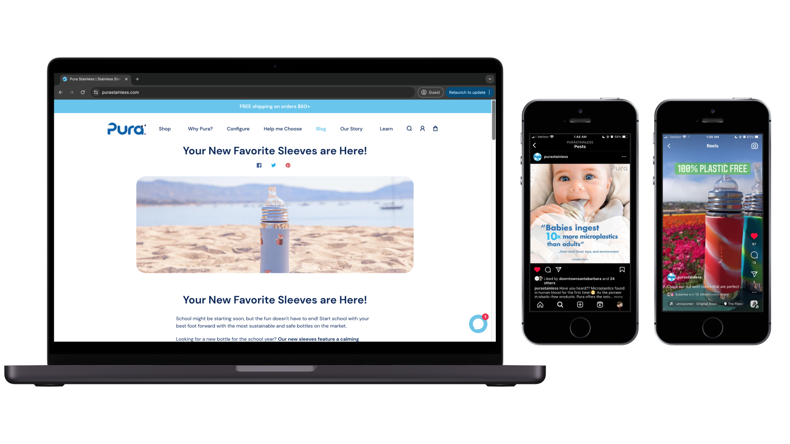

& More
Living the Questions
2D Animated Speech with After Effects
Inspired by the words of Brianna Wiest, I created a short 2D watercolor animation to visually represent her poetry, and chose a yoga instructor to narrate it in a gentle and stable tone. Please click the video below to watch the animation with audio.
Pura Stainless
Video Marketing, Social Media, Brand Design
At Pura Stainless, I designed brand materials and assets, and led the company's video marketing strategy, achieving more than quadruple its usual social media engagement.
Backstories: CLU Creatives
Multimedia Project (Film, Graphics, Web, Music)
Our team of five combined our diverse skillsets to produce a film series and website that showcased the backstories and creative processes of artists from Cal Lutheran University. As team leader and a UX / UI designer, I managed production and designed the website.